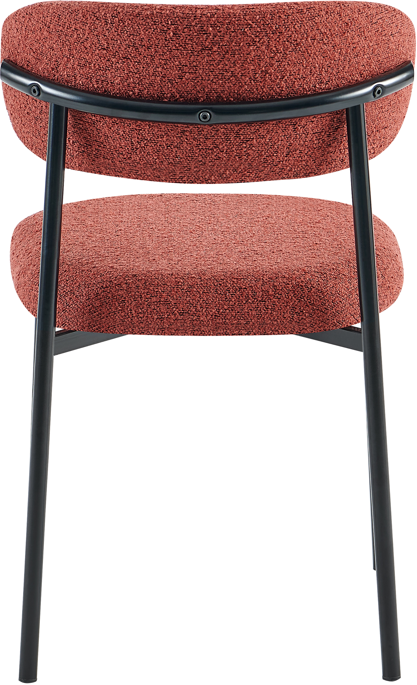
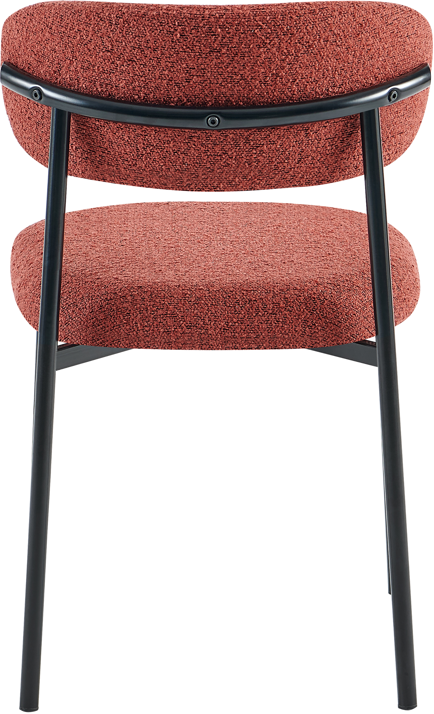

Bow ruokapöydän tuoli punainen
198101
 


Kuvaus
Lisää väriä ja modernia tyyliä ruokailutilaasi Bow ruokapöydän tuolilla. Tämä näyttävä punainen tuoli yhdistää mukavuuden ja käytännöllisyyden tarjoten samalla laadukasta istumismukavuutta. Sen pyöristetyt muodot ja siro design tuovat eleganttia tuntua kaikenlaisiin sisustuksiin. Tuolissa on kestävä ja tukeva metallirunko, joka takaa luotettavan käytön. Päällinen on valmistettu pehmeästä kankaasta, joka on miellyttävä ja helppohoitoinen. Istuimen täytteenä oleva vaahto tarjoaa lisämukavuutta pidempienkin aterioiden ja seurusteluhetkien aikana. Bow ruokapöydän tuolin korkeus on 80 cm, leveys 48 cm ja syvyys 52,5 cm. Näin se sopii erinomaisesti useimpiin ruokapöytiin. Helppohoitoinen ja tyylikäs, tämä tuoli on erinomainen valinta arjen käyttöön ja juhlatilaisuuksiin. Valitsemalla Bow-tuolin saat laadukkaan ja edullisen kalustevalinnan, joka sijoittuu hinta-laatusuhteeltaan korkealle. Kirkkaan punainen väri tuo pirteän ilmeen ja tekee tästä tuolista katseenvangitsijan.